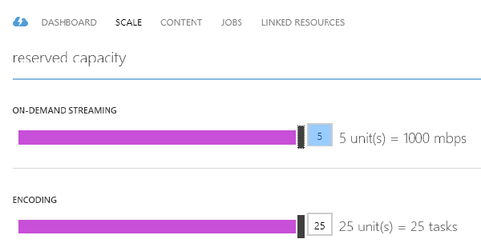

On the Scale page of the Windows Azure Management Portal, you can specify the number of On-Demand Streaming Reserved Units and Encoding Reserved Units that you would like your account to be provisioned with.
On-Demand Streaming reserved units provide you with both dedicated egress capacity that can be purchased in increments of 200 Mbps and additional functionality which currently includes dynamic packaging capabilities. By default, on-demand streaming is configured in a shared-instance model for which server resources (for example, compute, egress capacity, etc.) are shared with all other users. To improve an on-demand streaming throughput, it is recommended to purchase On-Demand Streaming reserved units.
The allocation of any new units of on-demand streaming takes around 20 minutes to complete.
The number of provisioned encoding reserved units is equal to the number of media tasks that can be processed concurrently in a given account. For example, if your account has 5 reserved units, then 5 media tasks will be running concurrently as long as there are tasks to be processed. The remaining tasks will wait in the queue and will get picked up for processing sequentially as soon as a running task finishes. If an account does not have any reserved units provisioned, then tasks will be picked up sequentially. In this case, the wait time between one task finishing and the next one starting will depend on the availability of resources in the system.
The new encoding reserved units are allocated almost immediately.
In the Management Portal, click Media Services. Then click the name of the media service to open the dashboard.
To specify the number of reserved units, select the Scale page and move the reserved capacity slider.

Note: Currently, going from any positive value of on-demand streaming units back to none, can disable on-demand streaming for up to an hour.
Note: The highest number of units specified for the 24-hour period is used in calculating the cost. For information about pricing details, see Media Services Pricing Details.
By default every Media Services account can scale to up to 5 Encoding and 5 On-Demand Streaming Reserved Units. You can request a higher limit by opening a support ticket.
To open a support ticket do the following: